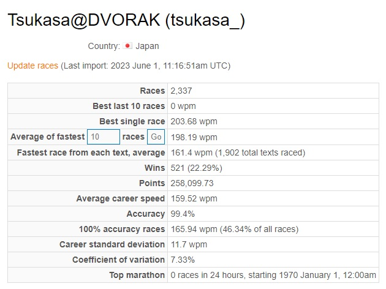

From the New World
競技タイピングの記録置き場
旧ブログ（タイピング記事など）→A fan of the Dvorak layout
タイピング記録一覧（項目クリックで開きます）
- タイプウェル英単語

・2023/05/12 Q-Z更新 27.359(ZG) -> 27.100(ZG)
- e-typing
※e-typing英語の記録です
- typeracer
bestrace ... 195.75 wpm (旧アカウント:melot)
textbest ... 145.26 wpm (旧アカウント:melot)
現行アカウント↓

- monkeytype

- 10fastfingers（追加予定）
- Intersteno（本番記録、練習記録）（追加予定）